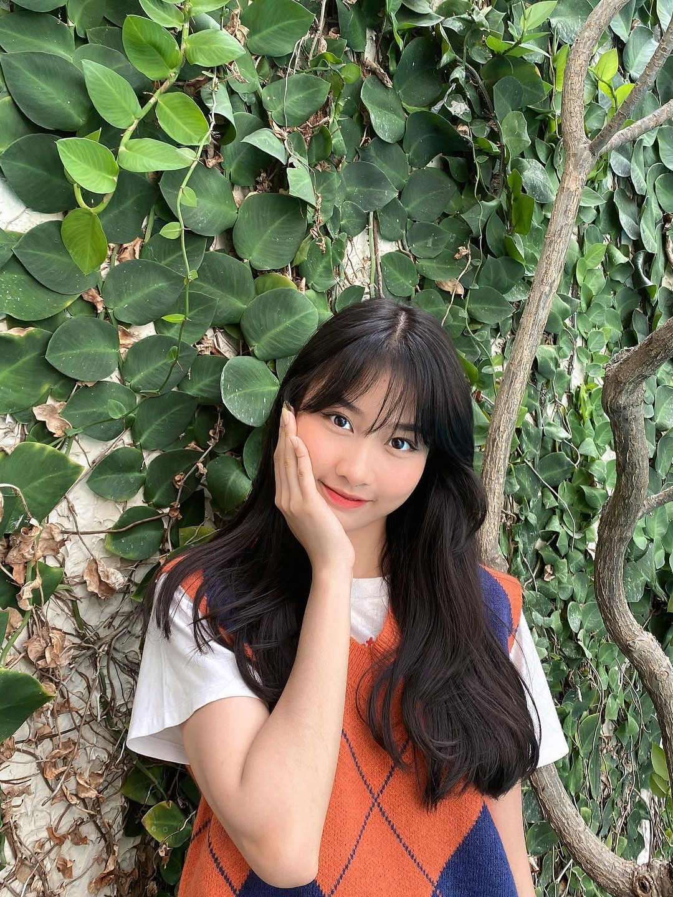
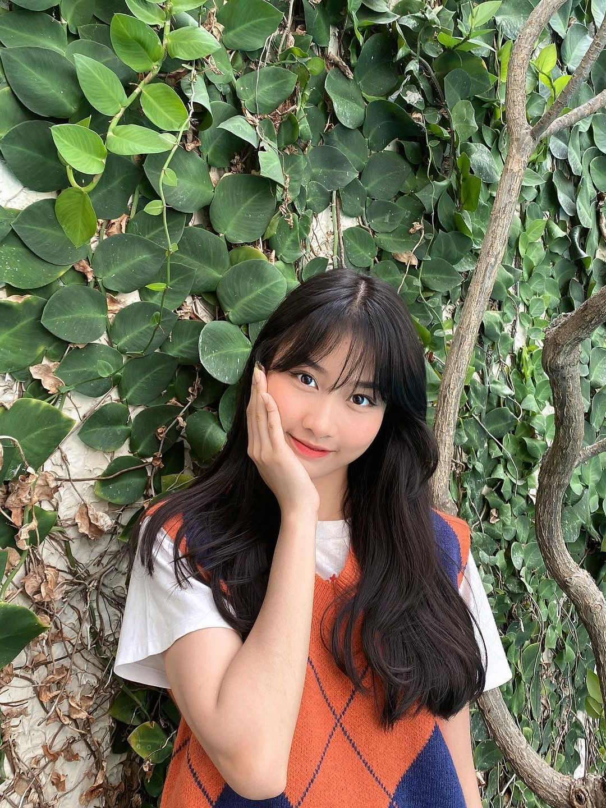

Flashback to 2017 Season With
Our Great Yearbook
Hi teman-teman, Apa kabar?
Gabung SekarangTerbentuknya sekolah sehat yang memiliki siswa berakhlak mulia, cerdas, terampil, tanggap terhadap kemajuan zaman dan berwawasan ekologis menuju kategori sekolah adiwiyata.
Assalamu'alaikum Wr, Wb.
Innal hamdal lillah nahmaduhu wanasta'iinuhu wanastaghfiruhu wana' uudhubill- ahi min syururi anfusinaa wa min sayyiati a'maalinaa man yahdihillahu falaa mudzil lalahu wa man yudzlil fala haadiya lahu, wa asyhadu anlailaha illallohu wahdahu laa syariika lahu, wa asyhadu anna muhammadan 'aduhu wa rasuuluhu. Amma ba du:
Segala puji hanya milik Allah SWT Rabb semesta alam beserta isinya, yang telah mencurahkan rahmat dan hidayahnya sehingga penyusun buku tahunan kelas IX ini dapat diselesaikan. Shalawat dan salam semoga tetap Engkau limpahkan kepada Nabi besar Muhammad saw, keluarga dan sahabat, serta umatnya hingga akhir zaman.
Bapak/Ibu Guru, Staff tata usaha serta seluruh Keluarga Besar SMPN 1 Ciruas yang saya hormati, siswa/siswi kelas IX yang Bapak cintai dan banggakan.
Pada kesempatan yang berbahagia ini, Bapak menyampaikan ucapan selamat kepada seluruh siswa kelas IX yang telah berhasil menempuh proses pembelajaran di SMPN 1 Ciruas, selama kurang lebih tiga tahun yang penuh kenangan ini. Semoga keberhasilan ini akan lebih bermakna manakala diiringi dengan niat, motivasi dan semangat yang tinggi untuk tetap melanjutkan ke jenjang pendidikan berikutnya.
Anak-anaku siswa/i kelas IX yang Bapak banggakan, Bapak berpesan selama kurang lebih tiga tahun kalian menempa diri, menuntut Ilmu di SMPN 1 Ciruas, jadikan sebagai sebuah proses pembelajaran sebagai upaya pendewasaan kalian menuju cita-cita yang kalian impikan. Jangan pernah merasa cukup untuk belajar karena sejatinya proses belajar adalah upaya untuk mengembangkan segala potensi spiritual keagamaan, pengendalian diri, kepribadian, kecerdasan, akhlak mula. serta keterampilan yang diperlukan, bagi masyarakat, bangsa dan negara.
Pengalaman yang kalian dapatkan selama di SMPN 1 Ciruas, baik suka maupun duka hendaknya selalu menjadi kenangan tersendiri di hati kalian masing-masing untuk tetap belajar sepanjang hayat atau life long education. Segala daya dan upaya kami keluarga besar SMPN 1 Ciruas telah kami curahkan sepenun hati, untuk mengantarkan kalian menjemput cita-cita dan harapan masa depan kalian.
Tentu saja terdapat banyak kekurangan kami dalam memberikan layanan pendidikan selain manfaat yang kalian dapatkan. Terlepas dari itu semua, Bapak titipkan nama baik SMPN 1 Ciruas tercinta ini kepada kalian semua, jagalah nama harumnya, tingkatkan prestasinya, tumbuh-kembangkan terus agar menjadi sekolah yang memiliki nama besar yang banyak di Ingat orang dan pada suatu saat kalian akan berbangga pernah menjadi bagian dari keluarga SMPN 1 Ciruas tercinta ini.
Tentunya kami selaku Pimpinan Sekolah mengucapkan terima kasih atas partisipasi seluruh siswa, para Pembina, dewan guru dan staf yang telah bersusah payah dalam pembuatan Album Kenangan ini dan mudah-mudahan menjadi suatu awal yang baik bagi generasi yang akan datang. Demikian kata sambutan yang dapat Bapak Sampaikan, Semoga Allah SWT senantiasa menjaga dan meridhoi hubungan silaturahmi'seluruh keluarga besar SMPN 1 Ciruas sampai kapanpun...Amin..amin ya rabbalalamin
Kepala Sekolah
SMP Negeri 1 Ciruas, Kabupaten Serang
Drs. H. Uus Ruhyadi, M.Pd
Assalamualaikum WR.WB
Segala Puji bagi Allah SWT Tuhan semesta Alam serta Sholawat serta salam tercurahkan kepad baginda kita Rasullullah SAW.
Pada kesempatan kali ini, kami dari jajaran Wakil Kepala Sekolah menyampaikan ucapan selamat kepada seluruh siswa-siswi IX yang telah berhasilmenempuh proses pembelajaran di SMPN 1 Ciruas.
Semoga buku tahunan ini menjadi memori yang akan menjadi kebanggaan dan menumbuhkan motivasi serta inovasi di masa yang akan datang. Selamat berjuang, dan jadikanlah pengalaman belajar di SMPN 1 Ciruas ini sebagai catatan pengalaman hidup yang dikenang dan memberikan nilai postif.
Selamat menjupai kehidupan yang lebih luas dan komplex di masyarakat. Semoga kita selalu memperoleh berkah dan rahmatnya sehingga kalian menjadi pridbadi yang dapat meraih cita-cita setinggi-tingginya dan kelak menjadi manusia yang memperoleh keberuntungan. Aamiin ya robal alamin.
Wasallamualaikum.WR.WB
Wakil Kepala Sekolah
SMP Negeri 1 Ciruas, Kabupaten Serang
 
